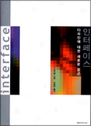
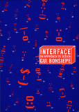
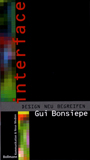
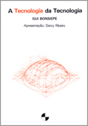
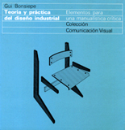
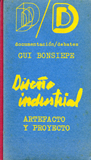

books
17 Herausgabe und Übersetzung der Schriften von Tomás Maldonado (2007 Basel)
15 Interface
(2003) (Seoul)

14 (out-of-print) Interface – An Approach to Design
(1998 Maastricht)

12 (vergriffen) Interface – Design neu begreifen
(1996 Bollmann Mainz)

10 Las siete columnas del diseño (1993 México)
9 Las siete columnas del diseño (1993 La Habana)
8 (esgotado) Teoria e Prática do Design Industrial
(1992 Lisboa)
7 (agotado) El diseño de la Periferia
(1985 México)
")
6 (esgotado) A ‘Tecnologia’ da Tecnologia
(1983 São Paulo)

5 (agotado) Diseño industrial, Tecnología y Dependencia (1978 México)
4 (agotado) Teoria y practica del diseño industrial (1978 Barcelona)

2 (agotado) Diseño industrial: Artefacto y proyecto (1975 Madrid)

1 (vergriffen) Design im Übergang zum Sozialismus (1974)